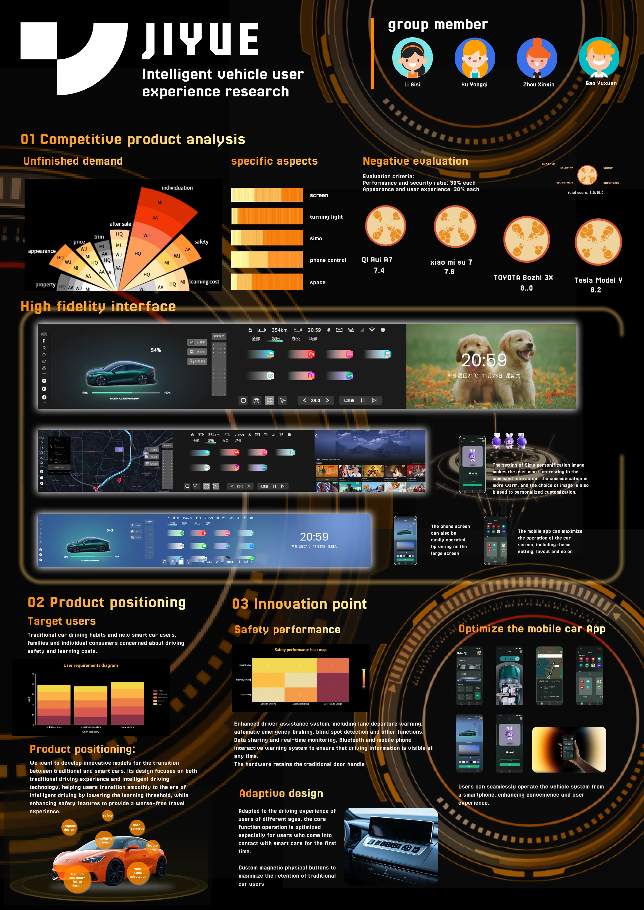
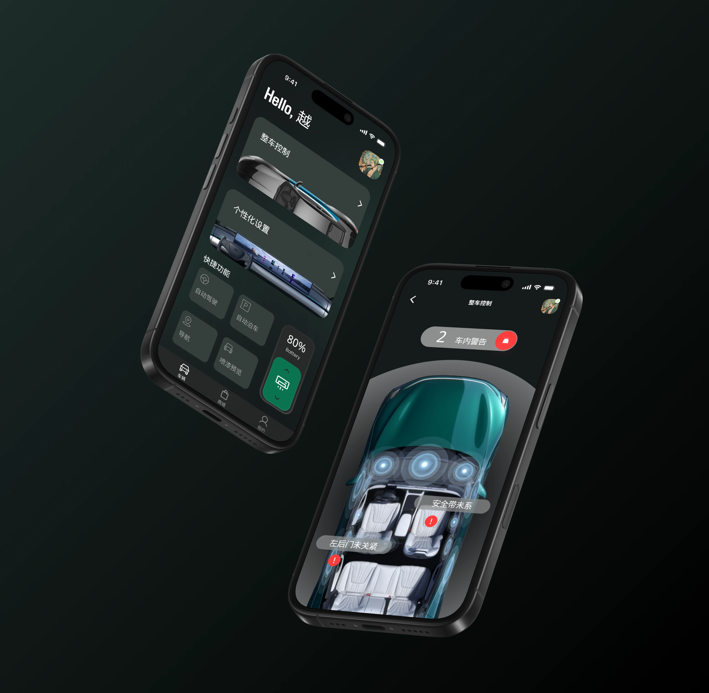
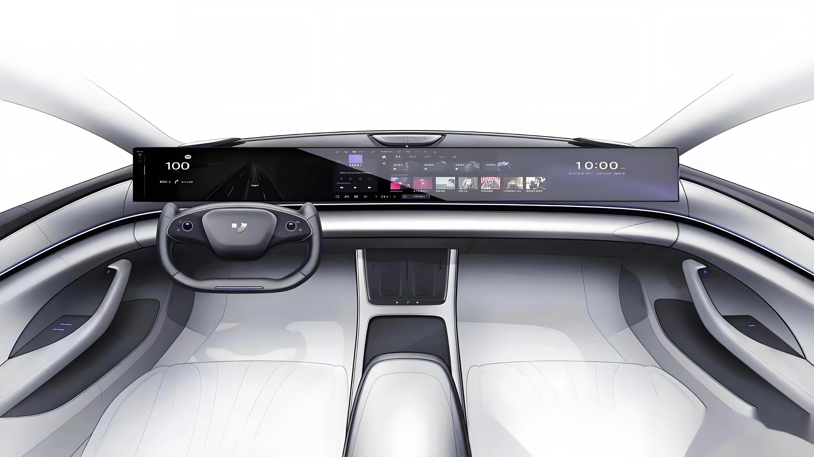
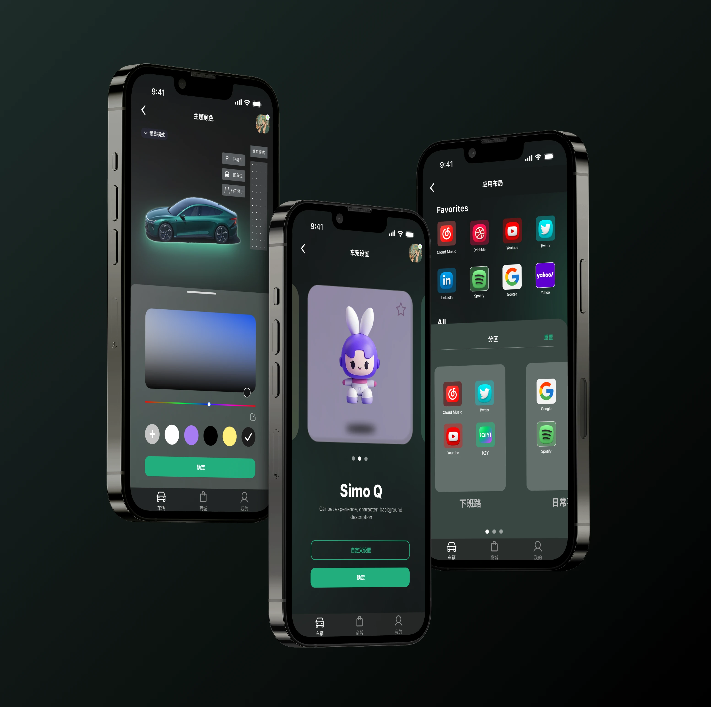

智能驾驶车辆体验与APP优化设计
项目定位与设计挑战
针对极越汽车（JIYUE 07）智能化转型中的用户适应性问题，本项目致力于降低智能驾驶学习成本并优化人车交互体验。核心矛盾在于：车载系统突破性创新（如取消实体按键、超长屏幕交互）虽提升技术先进性，但显著提高用户认知负荷。
78%
新用户需≥3天适应全新交互逻辑
65%
传统驾驶习惯与智能操作冲突率
42%
触屏换挡误触率
核心设计策略
渐进式能力引导系统
驾驶场景分级可视化
将智能驾驶能力拆解为L0-L4层级（从基础巡航到全自动驾驶），通过动态进度条实时展示当前模式能力边界。
L0
L1
L2
L3
L4
情景化教学模块
用户首次触发新功能时，系统通过AR箭头标注操作区+语音分步引导，缩短学习路径至<15分钟。
AR箭头标注
语音分步引导
实时操作反馈
超长屏幕空间效能优化
主驾驶侧功能
3D车道级导航
手势快捷指令
AR仪表盘
副驾驶侧功能
离线娱乐模式
乘客协作功能
智能座舱环境控制



